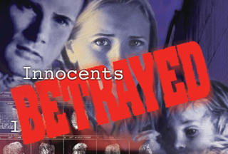

| Previous | EuroHacker Magazine, issue #2 | Next |
Written by: the editor (yes, I actually did work)

Today I got a most pleasant surprise in the mail: a free copy of the documentary "Innocents Betrayed", which links gun control to genocide, sent to me by the awesome people at JPFO (Jews for the Preservation of Firearms Ownership). I even got a hand-written note from their leader, Aaron Zellman. You guys rock!!!
Anyway, it was kinda inconvenient that I should get it today since today is release day. But, to show my gratitude, I worked overtime (yes, you are reading it right)... :)
The DVD looks really slick and professional, almost like a Hollywood movie :) It fails to mention the words "gun control" on the back, though, which is kind of weird...
The video production does a convincing job, what with all the fades and zooms and sounds. It manages to not become boring, even though it relies mainly on photos and voice-overs. Gory images uproot the viewer's sentiments, to great effect. I felt kind of queasy watching some of it, so you may be advised not to treat Grandma to this kind of entertainment.
The meat part of the documentary details various genocides committed in the 20th century and their link to gun control. Germany is of course the main example to consider but the documentary showed me some I hadn't really heard of about before. At times the link between gun control and genocide is exaggerated and oversimplified, but mostly it gives us a good feeling of the message that is being conveyed. I'd say we are shown more strong links than tenuous ones. I would have liked to see more examples of successful self-defence against government, though. For instance, the Warzaw ghetto uprising.
After all the world-wide genocides the documentary takes a look at genocide in the US. It looks at the persecution of blacks and native Americans in the 19th and 20th centuries. Good points are brought up about minorities who are made defenceless. It also goes in to some specific cases where gun control has led to the death of individuals. I found this a bit out of place, since it wasn't related to genocide per se.
My main gripe with the documentary is that it is based on an assumption which is not explained nor discussed adequately. It is implicit. Now, for some of us, the reasoning used in the documentary is obvious, but it is not to the common man (at least not in Europe). Therefore I would have liked to see a philosophical argumentation of sorts. Explain the ethics of self-defence and such. The documentary seems a lot like a history book to me: great if you want some specific info but not so informative if you need to know the whys as opposed to the hows and whats. In short: it's not enough to just shock a man with grisly images, you have to really convince him as to why he should believe the basic assumption that this documentary is based upon. Otherwise, he'll just go "ah, but that won't happen here" or "guns make no difference". Again, this kind of thing is obvious to some of us but others just need to have their gun control brainwashing undone, you know :) Also, I would have liked to see some rebuttals of common arguments against guns as a counterweight to tyranny ("we can't fight the government with our guns, they have nukes and tanks helicopters and bombs and crap"). Maybe mention Waco.
Another problem is the lack of mention of the genocides committed by the United States government in World War 2 and the Viet Nam war (as well as in other wars and operations). Dresden? Hiroshima? My Lai? Operation Rolling Thunder?
After the documentary, we get to see some interviews, where I think the needed philosophical arguments are brought forward in a better way. Had the documentary included some of the arguments for gun ownership found in the interviews, that would have been great. Brownie points for that fact that Aaron Zellman drops the Robert A. Heinlein quote "An armed society is a polite society" :)
I was impressed with this documentary. Most pro-gun advocates talk about the right to defend yourself against common criminals. The fight against tyranny is kind of forgotten, especially by mainstream gun organizations such as the NRA. Still, for people who are new to the whole pro-gun movement, I recommend that you pick up something that deals with the former category of self-defence. The latter is a bit esoteric, after all, and I think you need to be a bit hardcore to properly digest it. Perfect for EuroHacker readers, in other words!
I give it a rating of 8/10. If you are pro-guns, you need this in your collection.
Oh, one more thing. If you order a copy, tell 'em I sent you ;)
Some links:
http://www.jpfo.org
http://www.innocentsbetrayed.com/